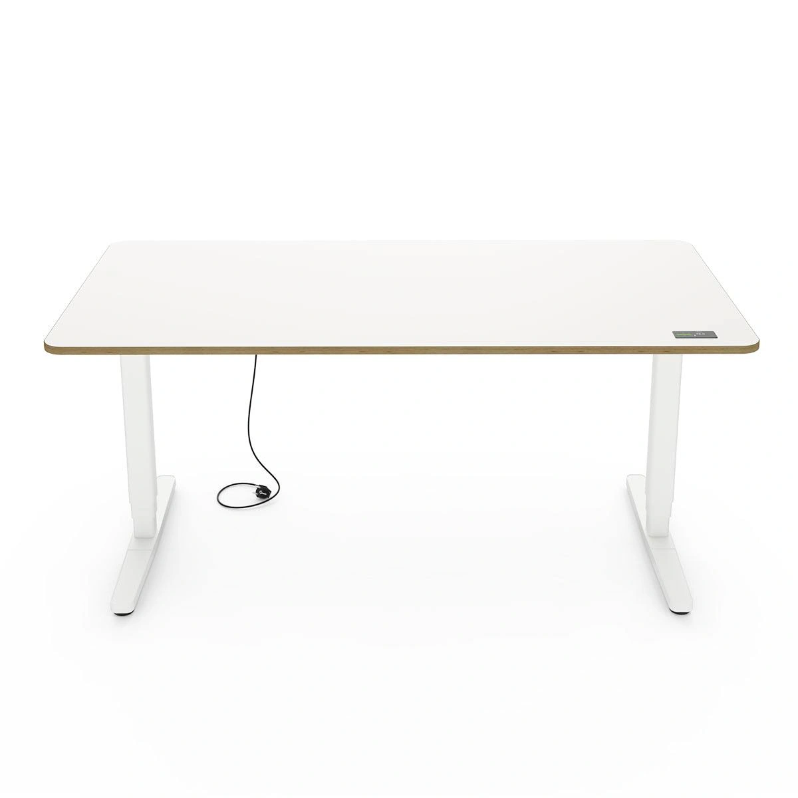

Yaasa Creative DNA
样本：8张去重图片、8条广告记录。仅描述本次样本，不推断整个品牌预算、效果或完整策略。图像组件能支持构图与道具观察，不能支持整张广告文案版式判断。
常用构图
高位纯产品视角与“左场景右信息”的办公室版式并存；竖版清单标题较大。
高频卖点
外观与选型、办公室使用语境、采购信息和保障。
使用场景
纯产品、共享办公室、采购资料封面。
人物
多人屏幕工作和采购资料头像，职业与年龄均为视觉推断。
配色
黑白木色产品，采购版式有浅粉深棕与橙红。
促销
清单下载与保障信息较清楚；不是销售转化数据。
辨识度
本次办公邻近广告把购买者角色写得明确，适合启发小企业采购内容。
Furniwell可借鉴方法
“用途先行”的B2B信息分区、多人独立任务、兼容性检查清单。
不照搬的元素
Yaasa专有文案、电子书封面、IGR吊牌、保证期限、减少病假等未证实承诺。
代表素材

YAAS-GOOG-010YAAS-GOOG-010 · Yaasa · Google · 真实广告内的图像组件（非完整广告版式）
原广告来源
德国日期筛选列表已核验；单条首次/最后日期未读取。
 YAAS-GOOG-016
YAAS-GOOG-016YAAS-GOOG-016 · Yaasa · Google · 完整导出广告画面
原广告来源
德国日期筛选列表已核验；单条首次/最后日期未读取。
 YAAS-GOOG-017
YAAS-GOOG-017YAAS-GOOG-017 · Yaasa · Google · 完整导出广告画面
原广告来源
德国日期筛选列表已核验；单条首次/最后日期未读取。
 YAAS-META-4706898742970032
YAAS-META-4706898742970032YAAS-META-4706898742970032 · Yaasa · Meta · 广告中的静态图片
原广告来源
德国公开列表的起止日期与研究窗口相交。
本品牌含较多办公采购邻近素材，不能据此判断升降桌单品广告中B2B占比。